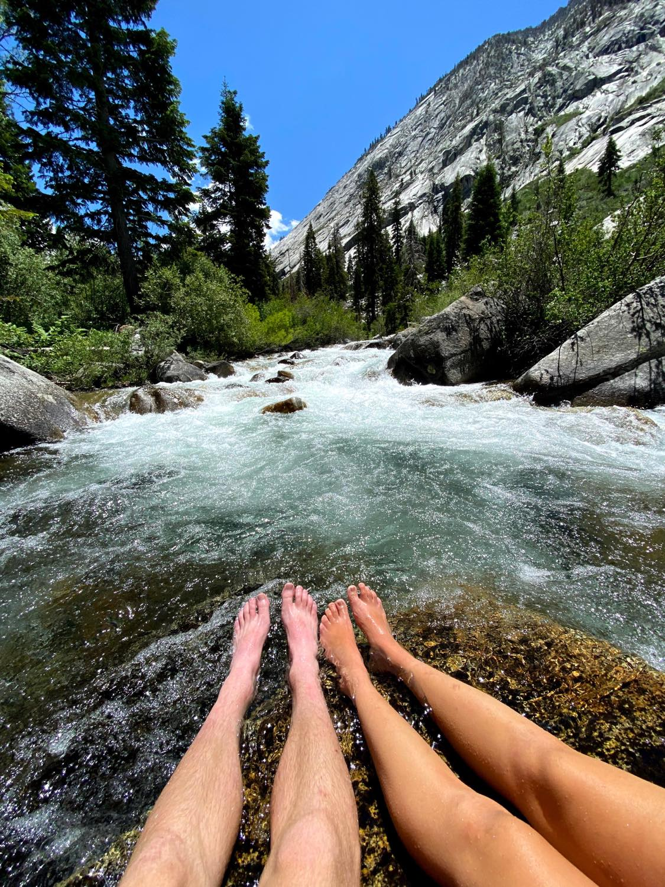

CALIFORNIA: CENTRAL SECTION
Central California provides the other type of terrain that California is not typically known for: forests, lakes, domes, and hot springs.
Yosemite, Sequoia, and Kings Canyon National Parks are in this section of California.
Explore some trails that I have shared in Yosemite and Kings Canyon, and a little bonus surprise hot spring location!
KINGS CANYON: RAE LAKES
Level: Difficult ~ 41.4 miles
Location: Kings Canyon National Park


Get ready for some real elevation gains, this trip is no joke! I attempted to do this trip over the summer 2020 with my boyfriend, but unfortunately he got sick in the middle of it so we didn't get to complete the full loop.
RAE LAKES ITINERARY
DAY 1 ~ Trailhead to Upper Rae Lakes, 17 miles. This day was tough! Expect to do intense uphil for about 15 miles until you reach the first lake (picture at the top of the page). This trail reminded me a lot of Trinity - same type of terrain. It took us about the whole day to make it to Upper Rae Lakes, but once we go there Nathan started to feel really sick and we breaked for the night.
DAY 2 ~ Upper Rae Lakes to Trailhead, 17 miles. We decided to hike the same way out instead of going through another 2 days when Nathan was feeling sick. For this trip it is crucial to remember that elevation sickness is real. Take it easy if you are feel nauseous or unwell.
YOSEMITE NATIONAL PARK: HALF DOME
Level: Difficult ~ 15 miles
Location: Yosemite National Park
Half Dome should be on everyone's bucket list. This is one of the most popular hikes in California and it makes sense! Just prepare yourself if you are afraid of heights ;)
HALF DOME: ITINERARY
DAY 1 ~ 15 miles. It is key that you start this trail as early as possible. We took off around 5am before sunrise and made it to the top around 11am. A piece of advice that I have for the cable section is always look forward and make sure to stay on one side of the cable. Everyone said that the way down is easier, but I would disagree. It is about the same danger level in my mind, but there is more of a view when going down the dome so it's worth it.
And make sure to bring gloves for the cables! You can get some serious cable burns otherwise :(
Mono Hot Springs
Location: Sierra National Forest
Mono Hot Springs is the perfect weekend getaway if you aren't into backpacking. There is a campground in the area, but we just found a spot off the dirt road that had a secluded hot spring and camped the night there. Some off-road campsites have premade firepits so we made some bomb cheese quesadillas on the fire.
There are 4 springs within walking distance of each other; you can use the location link to find them. And then there are a few scattered around where fewer people go because they are harder to find. Most of them vary in temperature but there are enough springs to be Goldilocks ;)
Back to Home